library(readr)
library(poliscidata)
final_data = read_csv("final_project/FINAL project dataset ct.csv")Tips for final project
1 About this document
This document offers some general advice, example code, and other suggestions for how you can improve your final analysis for this course. Its not meant to be a replacement for attending class, viewing the lectures, reviewing the slides, or meeting with me or the TAs. If you’ve reviewed the materials and you’re still not sure how to do something, reach out sooner rather than later.
1.1 Notes and FAQs
(I’ll be adding stuff to this section as I enounter it)
- The data for the final project doesn’t have weights, and you don’t need to use any of the
svyfunctions to analyze it. Keep in mind, however, that these data are still not representative of the general population, so you should acknowledge that this is a non-random sample when you discuss your results and the limitations of your analysis.
2 Importing the data into R
The final project data set is stored in .csv format and will need to be imported into R before you can start your analysis. I think the easiest way to do this is to use the graphical interface in Rstudio to import it the first time, and then copy-paste the code into your R script so you can just re-run the import commands the next time you open R.
To do this, you’ll want to start by clicking the “import dataset” button in the top right pane of Rstudio and then select “from text (readr)”.

This will bring up a graphical interface where you can browse for the data you want to import. Find your copy of the final project data and then click “done” to start the import.

Once the data is loaded, you can click the import button to load it into R, but before you do that, you should copy that code that appears in the “code preview” window. These are the commands you can use to import the data next time you need it.

Finally, you’ll want to paste the code from the console into your script. I would also recommend you change the name you’re giving the data set to something shorter than the default that Rstudio gives it (just for convenience) and you will probably want to get rid of that third command View() since that just makes the data set pop up in a new window so you can look at it.

Save this script with a name like “final project script” and now you can just run these two lines of code next time you need to import this dataset. Here’s what the first few lines of my script my look like. Obviously, you would want to change the part in quotation marks to match the file path where you’ve saved the final project data, but otherwise, this set of commands should work for you:
3 Recoding variables
The data sets you’ve been using for most of this class have already been cleaned and formatted for the most part, but, like most real-world data, the data for your final project will usually require some modifications before you can really make good use of them.
3.1 Reordering a variable
One very common problem is that R will try to alphabetize categorical variables, even when alphabetical order is a nonsenical way to present the data. For instance, Q35 ask respondents to state the highest level of education they have attained. It makes intuitive sense to order this variable from the fewest years of education to the most, but R doesn’t do that:
freq(final_data$Q35, plot=FALSE)| Frequency | Percent | |
|---|---|---|
| Associate degree in college (2-years) | 105 | 13.359 |
| Bachelor’s degree in college (4-years) | 177 | 22.519 |
| Doctoral degree | 11 | 1.399 |
| High school graduate (high school diploma or equivalent including GED) | 190 | 24.173 |
| Less than high school degree | 27 | 3.435 |
| Master’s degree | 95 | 12.087 |
| Professional degree (JD, MD) | 18 | 2.290 |
| Some college but no degree | 163 | 20.738 |
| Total | 786 | 100.000 |
So, to fix this, we can use the factor command to create a factor variable where the levels are listed in the appropriate order. You can do this by first: creating a vector that has each level of Q35 listed in order, and then passing that vector to the levels argument of the factor function:
# education levels listed from lowest to highest:
education_levels = c("Less than high school degree",
"High school graduate (high school diploma or equivalent including GED)",
"Some college but no degree",
"Associate degree in college (2-years)",
"Bachelor's degree in college (4-years)",
"Master's degree",
"Professional degree (JD, MD)",
"Doctoral degree"
)
# a new column called "education" with the levels in order:
final_data$education = factor(final_data$Q35, levels=education_levels)Now, when you create a frequency table for this new factor variable, the levels should appear in the correct order:
freq(final_data$education, plot=FALSE)| Frequency | Percent | |
|---|---|---|
| Less than high school degree | 27 | 3.435 |
| High school graduate (high school diploma or equivalent including GED) | 190 | 24.173 |
| Some college but no degree | 163 | 20.738 |
| Associate degree in college (2-years) | 105 | 13.359 |
| Bachelor’s degree in college (4-years) | 177 | 22.519 |
| Master’s degree | 95 | 12.087 |
| Professional degree (JD, MD) | 18 | 2.290 |
| Doctoral degree | 11 | 1.399 |
| Total | 786 | 100.000 |
3.2 Changing and combining labels
In some cases, it might also make sense to shorten the names of some factor levels so they can fit on a plot, or even combine some levels together. To do this, you would want to follow the same process you used above, but add a vector of “labels” that will represent the new values for your recoded variable. For instance, the code below will give shorter names to each factor level, and will also combine the Master’s, Professional, and PhD respondents under a single level called “Graduate degree”.
# education levels listed from lowest to highest:
education_levels = c("Less than high school degree",
"High school graduate (high school diploma or equivalent including GED)",
"Some college but no degree",
"Associate degree in college (2-years)",
"Bachelor's degree in college (4-years)",
"Master's degree",
"Professional degree (JD, MD)",
"Doctoral degree"
)
# the new labels for each level
education_labels = c("less than high school",
"High school",
"Some college",
"2-year degree",
"4-year degree",
"Graduate degree", # same label listed three times
"Graduate degree", # this will combine the last three
"Graduate degree") # factor levels under a single label
# a new column called "education" with the levels in order:
final_data$education_recode = factor(final_data$Q35, levels=education_levels, labels=education_labels)
freq(final_data$education_recode, plot=FALSE)| Frequency | Percent | |
|---|---|---|
| less than high school | 27 | 3.435 |
| High school | 190 | 24.173 |
| Some college | 163 | 20.738 |
| 2-year degree | 105 | 13.359 |
| 4-year degree | 177 | 22.519 |
| Graduate degree | 124 | 15.776 |
| Total | 786 | 100.000 |
3.3 Ordinal variables as numeric
Finally, if I have created a properly ordered categorical variable, I might want to treat that variable as numeric in my regression analysis. This might result in losing important information*, but it would simplify the interpretation of my model results because I will just a get a single coefficient for the effect of education instead of having K-1 separate coefficients representing each value. To do this, you can just use the as.numeric function:
Note: the downside to changing a factor variable to numeric is that it means you’re assuming that the independent variable has a linear effect on the outcome. But this isn’t always the case: going from a high school education to a college education probably has a lot more impact that going from a Master’s degree to a PhD. This is a simplifying assumption that makes your model easier to interpret at the cost of potentially ignoring important nuances about how the world actually works.
final_data$educ_numeric = as.numeric(final_data$education)This is especially handy if you have an independent variable with more than 7 categories. For instance, the income data in the NES has 28 levels, so a regression model using that variable would have 27 coefficients. By contrast, a numeric version of that variable results in a single model coefficient:
# a numeric version of the income variable:
nes$inc_numeric = as.numeric(nes$inc_incgroup_pre)
# a regression model
numeric_model = glm(voted2012 ~ inc_numeric, data=nes, family=binomial)
summary(numeric_model)| (1) | |
|---|---|
| (Intercept) | 0.655 *** |
| (0.064) | |
| inc_numeric | 0.062 *** |
| (0.005) | |
| N | 5036 |
| *** p < 0.001; ** p < 0.01; * p < 0.05. | |
But if I convert the factor variable to a numeric variable, I can use something like boxplot to give a succinct summary of the relationship between income and voter turnout:
nes$income_numeric = as.numeric(nes$inc_incgroup_pre)
boxplot(income_numeric ~ voted2012, data=nes, xlab="Turnout in 2012", ylab="Income group")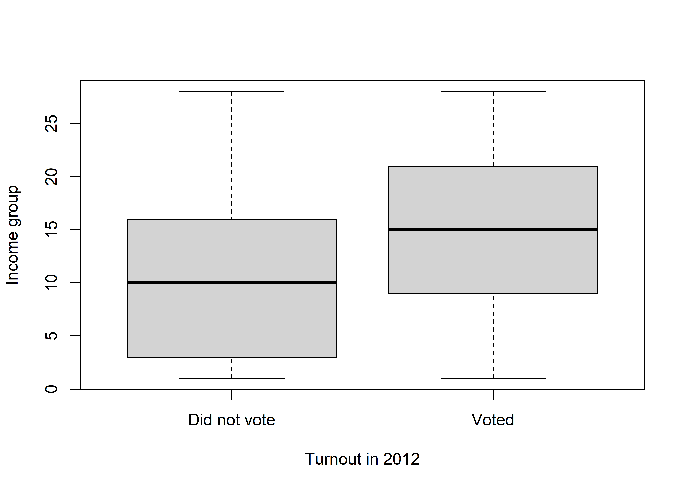
3.4 Dichotomous variables as numeric
Recoding a dichotomous variable to a dummy variable (0 or 1) isn’t strictly necessary, but it can be useful because the average of a dummy variable will correspond to the proportion of “1s” in the data. This may be especially helpful if you want to do something like visualize the percentage of some outcome across values of a categorical variable. For instance, to show voter turnout at different levels of party ID, I could run this:
nes$voted08_numeric = as.numeric(nes$voted2008 == "Yes")
plotmeans(voted08_numeric*100 ~ pid_x, # * 100 to scale the results as %
ylab = "% voted in 2008",
xlab = "Party ID (7-categories)",
main = "Voter turnout by party ID",
connect = FALSE, # change to TRUE to show a line connecting each point
data=nes) 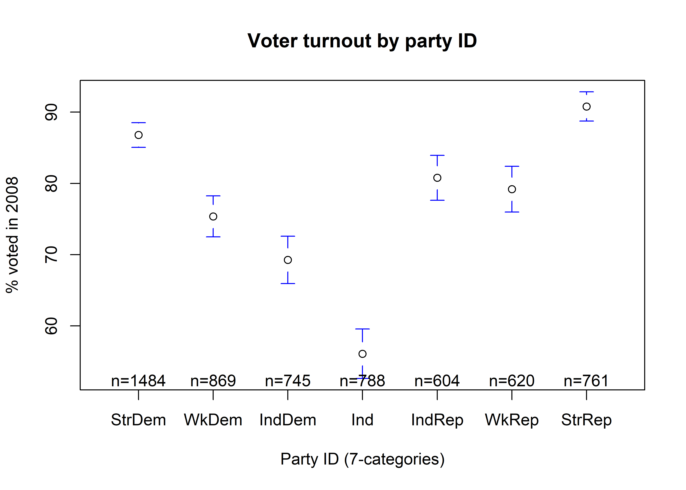
3.5 Recoding with logical statements
Another pretty common scenario will be cases where you want to convert a factor variable into something binary. You can do this using R’s logical operators. Here are some examples of logical operations I might use to change a variable:
Return TRUE if McCain won a state:
states$mccain_win08 = states$obama_win08 == "McCain win"| obama_win08 | TRUE | FALSE |
|---|---|---|
| McCain win | 22 | 0 |
| Obama win | 0 | 28 |
Return TRUE if pid_3 DOES NOT equal “Independent” (this would allow me to compare partisans to independents)
nes$not_independent =nes$pid_3 !="Ind"| pid_3 | TRUE | FALSE |
|---|---|---|
| Dem | 2358 | 0 |
| Ind | 0 | 2149 |
| Rep | 1385 | 0 |
Return TRUE if a relig is one of the major sects of Christianity:
gss$xtian = gss$relig %in% c("PROTESTANT", "CATHOLIC", "ORTHODOX-CHRISTIAN", "CHRISTIAN")| relig | TRUE | FALSE |
|---|---|---|
| PROTESTANT | 916 | 0 |
| CATHOLIC | 444 | 0 |
| JEWISH | 0 | 28 |
| NONE | 0 | 387 |
| OTHER | 0 | 25 |
| BUDDHISM | 0 | 6 |
| HINDUISM | 0 | 9 |
| OTHER EASTERN | 0 | 5 |
| MOSLEM/ISLAM | 0 | 13 |
| ORTHODOX-CHRISTIAN | 6 | 0 |
| CHRISTIAN | 120 | 0 |
| NATIVE AMERICAN | 0 | 6 |
| INTER-NONDENOMINATIONAL | 0 | 2 |
| NA | 0 | 7 |
Finally, you can use the <, <= etc. to compare a numeric variable to some value. For instance, this will return TRUE if ft_demis greater than or equal to 50:
nes$ft_above_50 = nes$ft_dem >= 50Keep in mind that variables coded as TRUE and FALSE will get converted to 1 and 0 automatically when you try to do a math operation on them, so taking the mean from the variable above will essentially give us the proportion of respondents who gave a value greater than or equal to 50 on ft_dem:
mean(nes$ft_above_50, na.rm=T)[1] 0.66678053.6 Changing the excluded category of a factor
Note here: when you use a factor variable inside a regression model, the first factor level will become the “excluded” category. If you want to change the excluded category, you can either reorder the levels using the code above, or you can just use the relevel function. For instance: in the original model, the excluded category are Democrats:
summary(lm(obama_therm ~ pid_3, data=nes))| (1) | |
|---|---|
| (Intercept) | 85.306 *** |
| (0.554) | |
| pid_3Ind | -29.574 *** |
| (0.804) | |
| pid_3Rep | -58.687 *** |
| (0.910) | |
| N | 5474 |
| R2 | 0.439 |
| *** p < 0.001; ** p < 0.01; * p < 0.05. | |
But I can change this so that “Independents” are the excluded category:
nes$pid_3_relevel = relevel(nes$pid_3, ref="Ind")
summary(lm(obama_therm ~ pid_3_relevel, data=nes))| (1) | |
|---|---|
| (Intercept) | 55.732 *** |
| (0.583) | |
| pid_3_relevelDem | 29.574 *** |
| (0.804) | |
| pid_3_relevelRep | -29.113 *** |
| (0.928) | |
| N | 5474 |
| R2 | 0.439 |
| *** p < 0.001; ** p < 0.01; * p < 0.05. | |
The choice of excluded category shouldn’t really matter for the predicted outcomes from your model, but it does matter for how you interpret your results, so it often makes sense to choose an excluded category based on what seems easiest to interpret.
4 Formatting output for the final paper
For your final paper, you should aim to have results that look professional and comprehensible to someone who isn’t already familiar with your data. This means a few things:
Formatting anything Variable names and levels should be changed to something descriptive and easy for a person to read. When you’re running your analysis, its fine to use abbreviations like “pid_3”, but when you’re presenting your results to someone else, you’ll want to change these to something like “Party ID (3-categories)”.
Formatting plots Everything should have clear axis labels and tickmarks. (This part you will need to do in R.)
- They should also have a label (fig 1, or table 1) a descriptive title, and maybe even a caption if there are important details you want to communicate about your results. (You can handle these in R, but you could also just write it out in the text of the word document if that’s easier for you.)
- Make sure you include a legend where necessary. Most often, this will be when you use shapes/colors/or line types to communicate important information in your plot.
- Make sure you’ve adjusted the size of your plot so that important information is clearly visible.
Formatting tables and regression output Everything should be readable, which usually means you will want to align your output in a table or use a fixed-width font.
- Numbers should be rounded to a sensible number of digits. What constitutes “sensible” is partly a judgement call, but its unlikely that you’ll be showing anything informative beyond 3 digits after the decimal place.
Avoid tables like the one below! Word processors use variable-width fonts, which means everything gets out of alignment if you just start typing numbers in:

Instead, you should create a table in Word and then put values in it. Here’s the same information, except the values have been placed in a table and the variable names have been edited:

- For regression output The notes about rounding and formatting apply here as well, but you should also think carefully about what you report. You should only include statistics that you needed to report for your prior homework, so you should not just copy and paste everything you see when you run
summary(model). Nobody needs to know the number of Fisher Scoring Iterations! That’s between you and R. Stick with the basics like the coefficients, fit statistic, p-values, etc.
When in doubt, look at the table or plot you have created and ask yourself if it would make sense to someone who wasn’t already familiar with the data. If it doesn’t seem like it would be comprehensible, then you should look for ways to make it so.
4.1 Using printC to format tables and models
It turns out the poliscidata package includes a helper function that can make exporting your tables and regression model output a lot easier. The printC() package will take pretty much any output and store it in a file in your local directory called Table.Output.html. If you open this file, you can just copy-paste that table into a word document and then make additional modifications there. In some cases, this may be a bit easier than having to type everything out by hand. Note that every time you run this function, your table will be appended to the bottom of the resulting file, so if you run this five times, you’ll have five separate tables and you’ll have to be careful to make sure you copy the correct one.
# a frequency table of party ID
pid_freq = freq(nes$pid_3, plot=FALSE)
model = glm(obama_win12 ~ secularism + gunlaw_rank, data=states, family=binomial)
# summary output from a logistic regression:
model_summary = summary(model)
# the odds ratios from the same logistic regression
orat = orci(model)
# print the results in Table.Output
printC(pid_freq)
# print the results in Table.Output
printC(model_summary)
# print the results in Table.Output
printC(orat)Here’s what the Table.Output.html file looks like after running the above commands:

To reiterate: there’s still some edits I would want to make to each of these tables, but if I copy and paste one into a word document, at least some of the formatting and alignment will already be handled for me.
For whatever its worth: R has a wide variety of options for formatting output from regression tables and models. We looked at using the huxtable package in a previous class, and most of the tables in this document were formatted using knitr::kable(). Either of these are fine options if you feel like going for style points, but they’re not required.
4.2 Exporting plots to word
By this point, everyone should have experience exporting plots to a word document by either copy-pasting or using the Rstudio export plot dialogue. However, in some cases you may need finer control over the size or resolution of your plot. The code below gives an example of creating a .png file in the current working directory with a specified height and width. Instead of showing up in the Rstudio plot window, this will cause the plot to be written to a file with the name you specify in the filename argument.
# this command sets up a file in the current working directory
png(filename = "turnout_plot.png",
width = 11, height = 8.5, units = "in", # height and width, specified in inches
bg = "white", res = 300)
nes$voted08_numeric = as.numeric(nes$voted2008 == "Yes")
# this is the plot that will be written to the file
plotmeans(voted08_numeric*100 ~ pid_x, # * 100 to scale the results as %
ylab = "% voted in 2008",
xlab = "Party ID (7-categories)",
main = "Voter turnout by party ID",
connect = FALSE, # change to TRUE to show a line connecting each point
data=nes)
# the plot is not written to file until this command runs:
dev.off()5 Example plots and tables
The following sections contain some examples of plots and tables you can use to summarize one or more variables. This is not an exhaustive list and the most appropriate visualization for your particular set of variables may not be included below. Most of this code will use either base R commands or it will use commands imported by the poliscidata package, so you would need to run library(poliscidata) before any of the code below would work. Also, for the sake of simplicity, I didn’t use weights for any of these plots, so this wouldn’t be the right way to handle these datasets normally, but it should work fine for your final analysis since that final survey also doesn’t have any weights with it!
Finally: there are lots of additional libraries that you could use instead, so don’t feel like you’re limited to the stuff in this section or even stuff that we’ve covered in class. R has been around a long time and has a vast user base, and its unlikely you’re the first person to need to make a visual representation of something. So feel free to get creative and look around online for code or packages that can give you what it is you’re looking for.
5.1 Plots and tables for a single variable
These are some functions you could use to either plot or create a table of summary statistics to show the central tendency, dispersion, skewness etc. for a single variable.
5.1.1 freq
The freq function should be used for categorical variables. It will generate both a frequency table and a barplot by default.
gay_sup = freq(states$gay_support3,
# these options apply to the barplot
y.axis='percent', # use a percent scale instead of frequency
ylab='percentage',
xlab="level of gay rights support in state")
gay_sup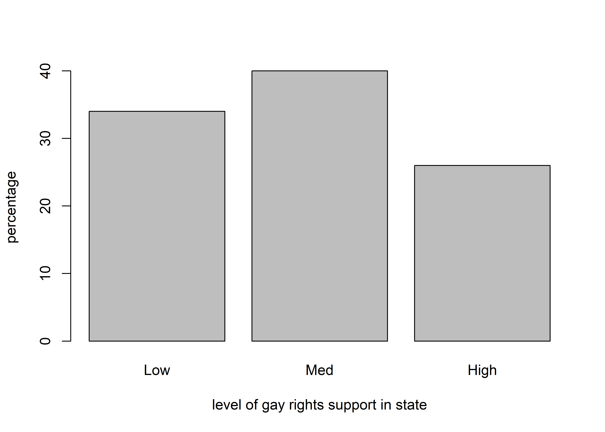
| Frequency | Percent | |
|---|---|---|
| Low | 17 | 34 |
| Med | 20 | 40 |
| High | 13 | 26 |
| Total | 50 | 100 |
5.1.2 histograms or density plots
Histograms or density plots are a good option for a single continuous variable. hist will generate a histogram, and plot(density(x)) will generate a kernel density plot (more or less a “smooth” equivalent of a histogram)
hist(states$prcapinc,
xlab = "per capita income",
main = "histogram of state per capita income"
)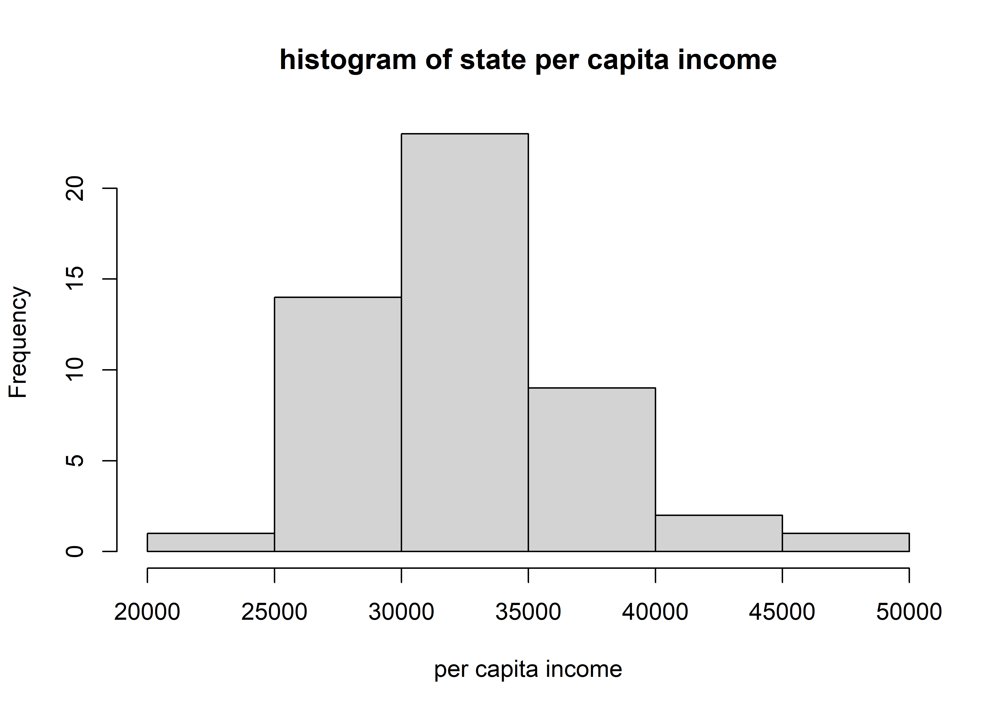
plot(density(states$prcapinc),
xlab = "per capita income",
main = "density plot of state per capita income"
)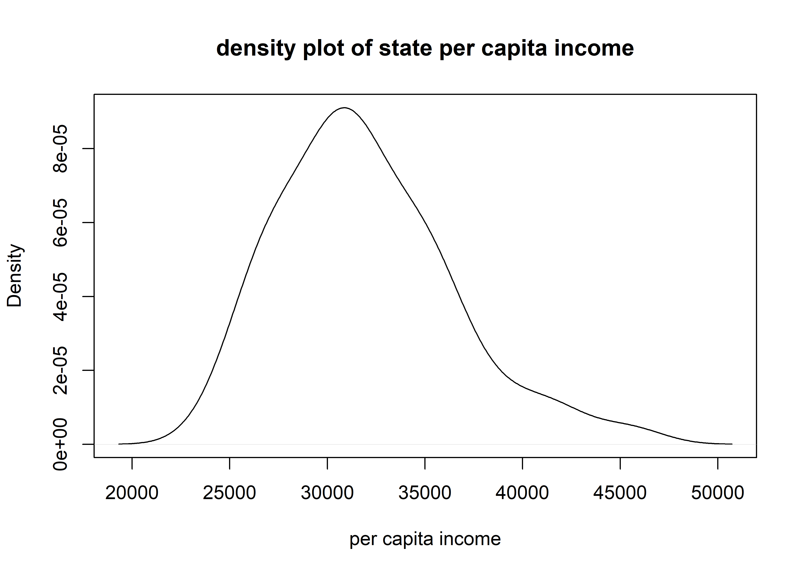
5.1.3 describe
The describe function will generally produce sensible summary statistics for one or more variables regardless of their type. If you specify a data set, you can use the formula syntax ~var1 + var2 +... to get descriptive statistics for multiple variables from a single dataset in one step.
desc = describe(~hispanic04 + gb_win00,data=states)
descThis command doesn’t offer a lot of options for formatting the results, but you could use the code below to make this create nice looking output that you could put in an appendix.
desc = describe(~hispanic04 + gb_win00,data=states)
Hmisc::html(desc)hispanic04 + gb_win00
2 Variables 50 Observations
2 Variables 50 Observations
hispanic04

| n | missing | distinct | Info | Mean | Gmd | .05 | .10 | .25 | .50 | .75 | .90 | .95 |
|---|---|---|---|---|---|---|---|---|---|---|---|---|
| 50 | 0 | 45 | 1 | 8.812 | 9.012 | 1.225 | 1.880 | 2.800 | 5.750 | 10.100 | 19.470 | 31.630 |
gb_win00
| n | missing | distinct |
|---|---|---|
| 50 | 0 | 2 |
Value Gore win Bush win Frequency 20 30 Proportion 0.4 0.6
5.1.4 table/prop.table
A simple and very flexible method for getting summary statistics for a categorical variable is the table command, which will produce a simple frequency table. You can use the prop.table function on an existing frequency table to get proportions instead of counts. You can also use the barplot command on any table to turn it into a barplot.
table(world$democ_regime,
dnn="democracy?") # dnn is the dimension name
# the default prop.table command will give a proportion between 0 and 1
# multiplying by 100 will convert this to a %
prop.table(table(world$democ_regime, dnn="democracy?")) * 100 | democratic.regime | Freq |
|---|---|
| No | 62 |
| Yes | 91 |
| democratic.regime | Freq |
|---|---|
| No | 40.52 |
| Yes | 59.48 |
5.2 Plots for multiple variables
Here are some plots for multiple variables that you might consider using. Note that at least some of these functions will allow you to include three or more variables, but you’ll need to be careful to make sure everything is clearly labelled and comprehensible when you do this because its pretty easy to end up with an unreadable plot.
5.2.1 plotmeansC
Plot the mean of an interval level dependent variable across different levels of a nominal or ordinal variable. The general syntax is plotmeansC(data, ~y_var, ~x_var, y_var ~ x_var) where y_var is an interval level dependent variable, and x_var is a categorical predictor.
plotmeansC(nes, ~obama_therm, ~pid_3, obama_therm ~ pid_3,
xlab = "Party ID (3 categories)",
ylab = "Mean feeling thermometer for Barack Obama",
main = "Obama feeling thermometer by party ID"
)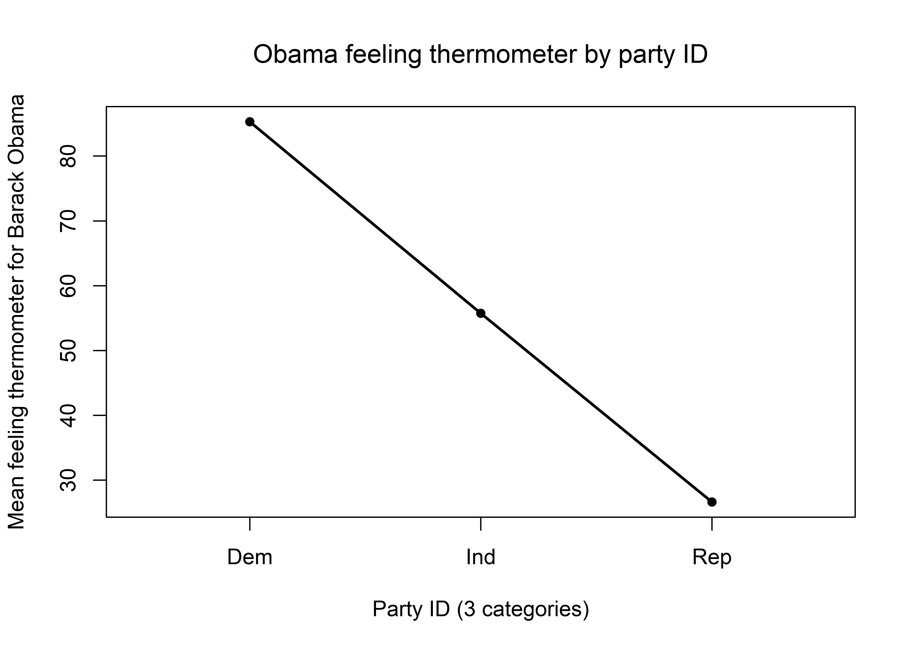
5.2.2 plotmeans
Plotmeans will give you the average and the 95% confidence interval for a continuous variable at different levels of a factor variable. The example below uses a dichotomous variable for whether or not a person voted that has been recoded to a numeric dummy variable.
nes$voted08_numeric = as.numeric(nes$voted2008 == "Yes")
plotmeans(voted08_numeric*100 ~ pid_x, # * 100 to scale the results as %
ylab = "% voted in 2008",
xlab = "Party ID (7-categories)",
main = "Voter turnout by party ID",
connect = FALSE, # change to TRUE to show a line connecting each point
data=nes) 
5.2.3 compmeans
compmeans will create a table and a set of boxplots showing the values of a continuous variable at different levels of a factor. x should be a continuous variable, and f should be a factor.
comparison = compmeans(x= nes$obama_therm, f= nes$pid_3,
xlab='Party ID (3-categories)',
ylab="Obama Feeling thermometer")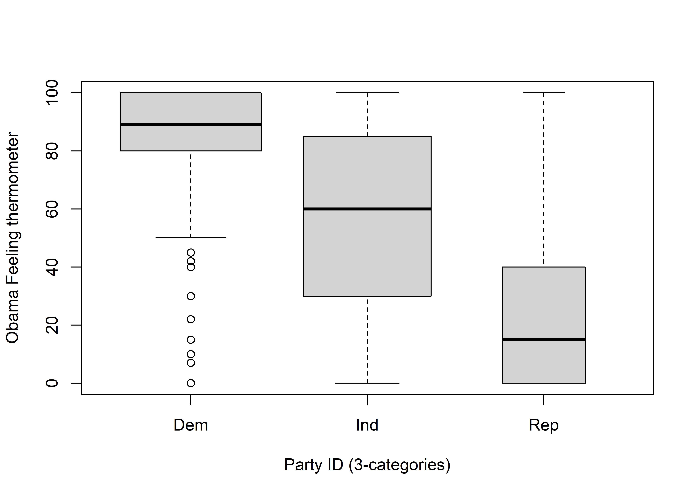
| Mean | N | Std. Dev. | |
|---|---|---|---|
| Dem | 85.31 | 2197 | 19.11 |
| Ind | 55.73 | 1984 | 31.48 |
| Rep | 26.62 | 1293 | 26.70 |
| Total | 60.72 | 5474 | 34.64 |
5.2.4 boxplot + stripchart
Both the boxplot and the stripchart function will allow you to use formula syntax to show the relationship between a continuous IV and one or more categorical DVs. Combining the two plot types is a nice way to give a good sense of the overall distribution of a continuous variable.
The method="jitter" argument basically just adds a small amount of “noise” to the data to avoid points from showing up right on top of each other, which is especially useful when you have a lot of observations that have the same value.
# Draws a box plot with points representing actual observations
boxplot(union10 ~ region, data=states,
xlab="Region",
ylab="Percent Unionized",
main="Unionization, by Region",
col = 'lightgreen' # color
)
stripchart(union10 ~ region, data=states,
col = 'gold', # controls the color
pch = 20, # controls the point type
vertical=TRUE,
method="jitter", # prevents overplotting
font.main=1,
add = TRUE # add = TRUE adds this to the current plot
)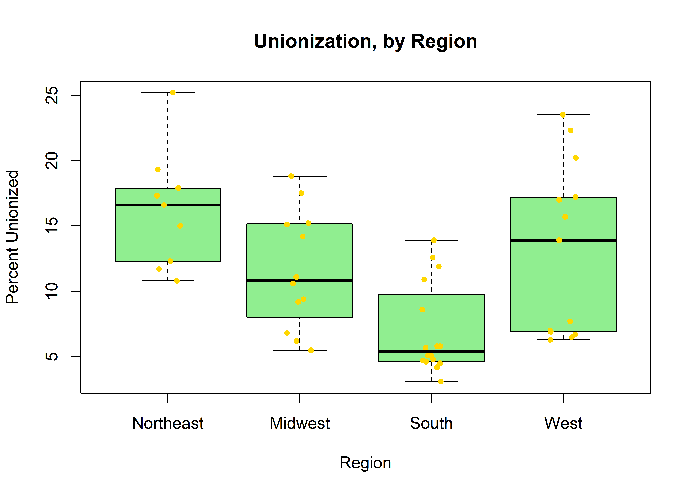
5.2.5 crosstab
The crosstab function creates a two-way table for two categorical variables
ct = crosstab( dep= world$protact3 , # the dependent variable
indep= world$dem_level4, # the independent variable
prop.c=T, # if the IV is in the rows, get row percent. If its in the columns, get column percents
plot=FALSE, # if you change this to TRUE, you'll get a mosaic plot as well as the table
dnn=c("Protest activity", "Level of democracy") # dependent varname followed by indep varname
)| Protest activity | Full Democ | Part Democ | Hybrid | Authoritarian | Total | |
| 1 | Low | 0 | 11 | 4 | 5 | 20 |
| 0.0% | 42.3% | 44.4% | 62.5% | |||
| 3 | Moderate | 6 | 10 | 3 | 3 | 22 |
| 31.6% | 38.5% | 33.3% | 37.5% | |||
| 5 | High | 13 | 5 | 2 | 0 | 20 |
| 68.4% | 19.2% | 22.2% | 0.0% | |||
| 7 | Total | 19 | 26 | 9 | 8 | 62 |
| 30.6% | 41.9% | 14.5% | 12.9% |
You could also use the proportions from this function to create a barplot that shows the proportion of your IV at different levels of your dependent variable.
barplot(ct$prop.col * 100, # scale to a percentage
ylab = "% of group",
xlab = "level of democracy" ,
# adds a legend
legend.text=TRUE,
# add a title to the legend and place at the bottom
args.legend=list(title = "Level of protest activity", x='bottom') ,
main = "level of protest activity by level of democracy"
)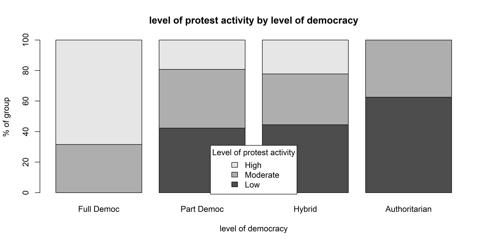
6 Interpreting logistic regression models
This section has a quick refresher on interpreting logistic regression output.
I’ll use the following logistic regression model:
The dependent variable is whether Obama won a state in 2012. The independent variables are % unionized in 2010, and whether a state is in the south.
states_model = glm(obama_win12 ~ union10 + abort_rank3 + south, data=states, family=binomial) 6.0.1 Model Coefficients
Remember that the logistic model predicts the effect of a one unit change in X on the log odds ratio that Y=1. The logistic regression output can give us a sense of the direction of effect, and the statistical significance for each coefficient, but interpreting the substantive implications of our results will usually require us to convert the logit coefficients into something more sensible like an odds ratio or a predicted probability.
| Probability: \(p\) | odds ratio: \(p / (1-p)\) | logged odds ratio: \(log(p/ (1-p))\) |
|---|---|---|
| 0.01 | 0.01 | -5 |
| 0.02 | 0.02 | -4 |
| 0.05 | 0.05 | -3 |
| 0.12 | 0.14 | -2 |
| 0.27 | 0.37 | -1 |
| 0.50 | 1.00 | 0 |
| 0.73 | 2.72 | 1 |
| 0.88 | 7.39 | 2 |
| 0.95 | 20.09 | 3 |
| 0.98 | 54.60 | 4 |
| 0.99 | 148.41 | 5 |
Probabilities, Odds ratios, and logged odds ratios
summary(states_model)| (1) | |
|---|---|
| (Intercept) | -3.022 * |
| (1.191) | |
| union10 | 0.202 * |
| (0.098) | |
| abort_rank3Mid | 1.343 |
| (0.883) | |
| abort_rank3Less restr | 1.944 |
| (1.143) | |
| southSouth | -0.507 |
| (0.874) | |
| N | 50 |
| *** p < 0.001; ** p < 0.01; * p < 0.05. | |
Based on these results, we can see that % unionization had a positive effect and statistically significant effect on the chances that Obama would win a state in 2012, but we would probably just want to convert these to odds ratios before going beyond that.
6.0.2 Exponentiation and odds ratios
The logit model coefficients represent the effect of a one unit change in X on the log odds that Y=1. For ease of interpretation, we generally want to convert logged odds ratios to standard odds ratios. The orci function will do that for us (and also calculate a 95% confidence interval around the odds ratio).
orci(states_model)| OddsRatio | 2.5 % | 97.5 % | |
|---|---|---|---|
| (Intercept) | 0.049 | 0.004 | 0.433 |
| union10 | 1.224 | 1.019 | 1.508 |
| abort_rank3Mid | 3.831 | 0.715 | 24.819 |
| abort_rank3Less restr | 6.985 | 0.798 | 80.711 |
| southSouth | 0.602 | 0.104 | 3.422 |
Another way to interpret these results is to convert them to a percentage change in the odds that Y=1. To calculate that, you can just take:
\[(e^\beta -1) \times 100\]
In plain English: that’s the exponentiated logit coefficient minus 1, multiplied by 100.
For instance:
the coefficient on
union10is 1.224. So: \((1.224 - 1) \times 100 = 22.4\): a one unit change in the level of unionization in a state leads to a 22.4% increase in the odds of Obama winning that state in 2012 (after controlling for abortion restrictions and region)The coefficient on
southis 0.602, so \((0.602-1) \times 100 = -39.8\): the odds of Obama winning a southern state were 39.8% lower than the odds of him winning in a non-southern state (after controlling for unionization and abortion restrictions)
You can get this result for the entire set of model coefficients in one step:
(orci(states_model) - 1) * 100| OddsRatio | 2.5 % | 97.5 % | |
|---|---|---|---|
| (Intercept) | -95.1 | -99.6 | -56.7 |
| union10 | 22.4 | 1.9 | 50.8 |
| abort_rank3Mid | 283.1 | -28.5 | 2381.9 |
| abort_rank3Less restr | 598.5 | -20.2 | 7971.1 |
| southSouth | -39.8 | -89.6 | 242.2 |
6.0.3 Predicted probabilities
Another way to interpret these results is to get predicted probabilities at different values of the independent variable. We can do this by taking the linear prediction for a particular observation, and then using the inverse logit function to convert the logged odds ratio into a probability.
linear prediction in this sense just means we’re getting predictions using the same approach we use to get predictions from a linear model:
\[{\text{linear prediction of Y}} = \beta_0 + \beta_1X_1 + \beta_2X_2...\]
In other words: we multiply the values of X by their respective coefficients and then add the intercept term. Once we have our linear prediction for Y, we can turn it into a predicted probability using the inverse logit function, which is just:
\[\frac{1}{[1+e^{-(\text{linear prediction of Y})}]}\]
We could do at least some of this calculation by hand or using a calculator, but the predict function in R basically does this for us. If we use predict(model, type='link'), we get the linear predictor. And if we use predict(model, type='response'), R will convert the linear predictor to a predicted probability.
For instance: I could calculate the predicted probability for a state with 20% unionization, in the South, with the minimum level of abortion restrictions by plugging those values into the regression results and then using the inverse.logit function in R:
Here are those coefficients:
coef(states_model)| x | |
|---|---|
| (Intercept) | -3.0219322 |
| union10 | 0.2022486 |
| abort_rank3Mid | 1.3430677 |
| abort_rank3Less restr | 1.9437812 |
| southSouth | -0.5068546 |
And now we can just plug in the relevant values of each variable and then transform the result to a probability:
# intercept + union10_coef * 20 + abortrank3Mid * 0 + abort_rank3Less restr * 1 + southSouth * 1
linear_pred = -3.0219322 + 0.2022486 * 20 + 1.9437812 + -0.5068546
inverse.logit(linear_pred)[1] 0.9212872This translates to a 92% chance that Obama would win the state under those conditions.
Alternatively, I could generate this prediction by creating some data with these values, and then using the predict function with the newdata option:
# a single row of data with the specified values:
state_case = data.frame(union10 = 20,
abort_rank3 = "Less restr",
south = "South" )
predict(states_model, newdata= state_case, type='response') 1
0.9212872 (notice this is the same result!)
And now here’s what happens when I go from abort_rank3 = "Less restr" to abort_rank3 = "Mid":
# a single row of data with the specified values:
state_case = data.frame(union10 = 20,
abort_rank3 = "Mid",
south = "South" )
predict(states_model, newdata= state_case, type='response') 1
0.8652097 Finally, to calculate a 95% confidence interval around this predicted probability, I need to start by calculating a 95% confidence interval on the linear predictor before I convert the result back to a probability, that’s why I want to use predict(model, type='link') here:
# get the predictor on the log odds scale
preds = predict(states_model, newdata= state_case, type='link', se.fit=T)
# The predictions:
data.frame("prediction" = inverse.logit(preds$fit),
# the lower 95% confidence interval
"lwr" = inverse.logit(preds$fit - 1.96 * preds$se.fit),
# the upper 95% confidence interval
"upr" = inverse.logit(preds$fit+ 1.96 * preds$se.fit)
)- 1
- Remember that, according to the central limit theorem, approximately 95% of sample means will fall within about 1.96 standard errors of the population mean. So we calculate the upper and lower confidence interval for this estimate by \[ \bar{x} \pm 1.96 \times \sigma\]
| prediction | lwr | upr |
|---|---|---|
| 0.865 | 0.303 | 0.99 |
This is last part (along with some reformatting of the results) is really all the pred_ci function is meant to do, so these should work more-or-less interchangibly.
# import the function:
source('https://raw.githubusercontent.com/Neilblund/APAN/main/pred_ci.R')
pred_ci(states_model, newdata=state_case)| index | union10 | abort_rank3 | south | fit | lwr | upr |
|---|---|---|---|---|---|---|
| 1 | 20 | Mid | South | 0.865 | 0.303 | 0.99 |
Marginal effects
You don’t actually need this for your paper, but I just wanted to briefly mention that the other approach to interpretation is to calculate some kind of marginal effect on the predicted probabilities. These are annoying to create but intuitive to interpret: they represent the effect of a one unit change in the independent variable on the predicted probability that \(Y=1\). Since the predicted probability curve is not linear, the marginal effect will be different depending on what values to choose to compare, which leaves a lot of room for disagreement among researchers regarding what cases they should compare when calculating a marginal effect. There’s a section at the end of this document that demonstrates one method to calculating this, check it out if you’re interested, but again: this is not required for the final paper.
6.0.4 Assessing model fit
For linear regression, we might use the \(R^2\) or adjusted \(R^2\) value to assess model fit, but the assumptions that allow us to estimate the residual sum of squares don’t hold up for this type of model. Instead, we can use the logregR2() function to produce some alternatives to the \(R^2\) (aptly referred to as “pseudo R-squared”) statistics that will work this type of model. The Cox and Snell Index, Nagelkerke Index, and McFadden’s R2 are all slight variations on general idea of comparing your model to a version of your model without any parameters (an intercept-only model). They can give you a very general sense of how well the model fits the data, but they aren’t exactly like the true R-squared statistic and you’ll notice that the three metrics give somewhat different results.
logregR2(states_model)Chi2 24.812
Df 4
Sig. <.001
Cox and Snell Index 0.391
Nagelkerke Index 0.522
McFadden's R2 0.358 7 Plots for predicted probabilities
The following sections discuss options for plotting predicted probabilities generated by a logistic regression model.
7.1 Using the pred_ci function
If you run the code below, you should see the pred_ci function pop up in your global environment (you could also just go to the link and copy-paste it into your script).
# import the function:
source('https://raw.githubusercontent.com/Neilblund/APAN/main/pred_ci.R')Here’s an example of using pred_ci to get predictions and confidence interval from a model that predicts the % chance of Obama winning a state in 2012 based on the level of unionization, level of statewide abortion restrictions, and whether a state is in the south. After estimating our model, we use the expand.grid function to create a data frame with hypothetical states, and then we pass both the model and the new data object to the pred_ci function.
library(poliscidata)
states_model = glm(obama_win12 ~ union10 + abort_rank3 + south, data=states, family=binomial)
# create some fake states
state_cases = expand.grid(
abort_rank3 = c("More restr", "Mid", "Less restr"),
south = c("South" , "Nonsouth"),
union10 = mean(states$union10)
)
# use the pred_ci function with the same syntax you would use for predict().
preds = pred_ci(model = states_model, newdata=state_cases)- 1
- Notice we have all three levels of abort_rank3 and south here, but union10 is being held at its mean. So our predicted probabilities are based on six hypothetical “typical” states with average levels of unionization but differing values for abortion restrictions and south.
- 2
-
The syntax here is the same as the standard predict function, but we don’t need to specify
type="response"and we don’t need to ask for the standard errors.
| index | abort_rank3 | south | union10 | fit | lwr | upr |
|---|---|---|---|---|---|---|
| 1 | More restr | South | 11.358 | 0.2258932 | 0.0394605 | 0.6745637 |
| 2 | Mid | South | 11.358 | 0.5278262 | 0.1907047 | 0.8413460 |
| 3 | Less restr | South | 11.358 | 0.6708724 | 0.1966546 | 0.9443599 |
| 4 | More restr | Nonsouth | 11.358 | 0.3263384 | 0.1030508 | 0.6713266 |
| 5 | Mid | Nonsouth | 11.358 | 0.6498260 | 0.3420087 | 0.8688586 |
| 6 | Less restr | Nonsouth | 11.358 | 0.7718854 | 0.3891260 | 0.9472982 |
The fit column contains the predicted probability of \(Y=1\) for each case. lwr is the lower boundary of the 95% confidence interval for that prediction, and upr is the upper boundary of the 95% confidence interval for that prediction.
7.2 Logit with categorical IVs
The following sections show a couple of different options for plotting predicted probabilities and 95% confidence intervals from a logistic regression model at different levels of categorical variables.
7.2.1 Generating the predictions
# create some fake states
state_cases = expand.grid(
abort_rank3 = c("More restr", "Mid", "Less restr"),
south = c("South" , "Nonsouth"),
union10 = mean(states$union10)
)
# use the pred_ci function with the same syntax you would use for predict().
preds = pred_ci(model = states_model, newdata=state_cases)7.2.2 Using plot()
This is the same code we’ve practiced before. We start by plotting the predicted probabilities with the plot() function, then we add line segments to indicate the confidence intervals around each predicted probability with segments(). Then we add the axis labels across the bottom. Finally, we add a y-axis on the left hand side.
# start with a plot of the predict probability (fit)
plot(x=1:nrow(preds),
y=preds$fit, ylim=c(0,1), pch=16, axes=F,
xlab = "Abortion restrictions/Region",
ylab = "Probability of Obama win in 2012",
main="Probability of Obama winning state\n
by region and abortion restriction ranking")
# add a line segment to indicate the upper and lower CI boundary
segments(x0=1:nrow(preds),
y0 = preds$lwr,
y1=preds$upr)
# add the x axis labels
axis(side=1, at=1:nrow(preds),
labels=c("High restrictions/South", "Medium Restrictions/South",
"Low restrictions/South", "High restrictions/Nonsouth",
"Medium Restrictions/Nonsouth", "Low restrictions/Nonsouth"),
cex.axis=.7)
# add a y axis
axis(side=2, las=2)- 1
-
nrow()counts the number of rows in a data frame. So the expression here just tells R to count from 1 to 6 - 2
-
segments()draws a line segment between the points specified by x0, y0 and x1, y1. However, since we just need a straight vertical line here, we don’t need to bother with specifying a value for x1. - 3
-
As always, make sure that your labels are in the same order as your data. If you’re unsure, trying running
View(preds)and double-checking.
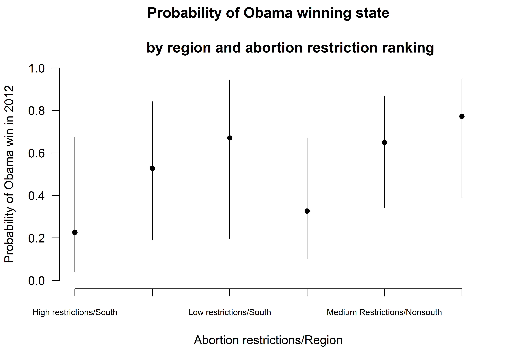
7.2.2.1 Same plot with color-coding
We can make this a little fancier (and/or more readable) by changing up how we display the axes. Instead of having all six cases separately on our x-axis, we can use color-coding to indicate region. This gives us a slightly more compact representation for our results. We’ll use the same model and predictions that we created in the previous section.
Much of the code here is unchanged. The main difference is that we have used subset to create separate predictions for Southern and Non-southern states, and then we’ve plotted the points and segments separately for each subgroup. The other difference has to do with the way we handled the axes: when we called plot we set xlimit = c(.9, 3.1). That gave us three ticks with just a little extra space left over. Then, when we created the points and segments for the Southern states, we set x=1:3+.05 and when we created the points and segments for the Non-southern states, we set x=1:3-.05. Adding this small offset to the x positioning allows us to show the south and non-south predictions close to each other without having them overlap.
# use subset to get separate predictions for each region:
south_preds = subset(preds, south=="South")
nonsouth_preds = subset(preds, south=="Nonsouth")
# make an empty plotting space
plot(x="", y = "", ylim=c(0,1),
xlim = c(.9, 3.1),
axes=F,
xlab = "Abortion restrictions", ylab = "Probability of Obama win in 2012",
main="Probability of Obama win\nby region and abortion restrictions")
# 95% confidence intervals:
segments(x0 = 1:3-.05, y0=south_preds$lwr, y1=south_preds$upr)
# segments for non-south
segments(x0 = 1:3+.05, y0=nonsouth_preds$lwr, y1=nonsouth_preds$upr)
# The prediction for south
points(x=1:3-.05,y=south_preds$fit, pch=17, cex = 1.5,col = "#e21833")
# The prediction for nonsouth
points(x=1:3+.05,y=nonsouth_preds$fit, pch=18, cex = 2,col = "#ffd200")
# add the axes and the labels
axis(side=1, at=1:3,
labels=c("High restrictions", "Medium Restrictions", "Low restrictions"),
cex.axis=.7)
# add a legend at the bottom
legend("bottom", cex =.8, pch=c(17,18), col = c("#e21833", "#ffd200"),
legend=c("South", "Nonsouth"))
# add the y-axis
axis(side=2, las=2)- 1
-
Setting
xlim= c(.9, 3.1)gives us just enough space for three points, but with a little excess room so we can accommodate having two points side by side. - 2
- Notice the offsets of +.05 and -.05
- 3
-
The
col="#e21833"andcol="#ffd200"give us Maryland Red and gold, respectively. See: UMD’s brand standard for the entire palette.
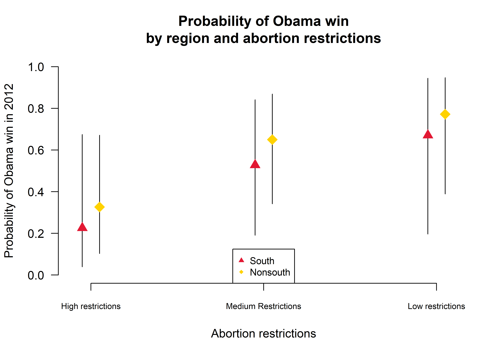
7.3 Logit with continuous IVs
The options above all assumed that you were looking for a small number of point predictions, but when we have a continuous variable, we might want to take full advantage of our data and see predictions across the full range of potential values. For the next set of examples, we’ll use the same model from the prior section, but we’ll create predictions across all levels of the union10 variable. For simplicity’s sake, we’ll only vary union10 and abort_rank3 and we can just hold south = "South".
7.3.1 Generating the predictions
# fake states at every level of union10 and abort_rank3
state_cases = expand.grid(
union10 = 0:30 ,
abort_rank3 = c("More restr", "Mid", "Less restr"), # all three levels
south = c("South")) # holding south constant
# use the pred_ci function with the same syntax you would use for predict().
union_preds = pred_ci(model = states_model, newdata=state_cases)
# use the pred_ci function with the same syntax you would use for predict().
preds = pred_ci(model = states_model, newdata=state_cases)- 1
-
Instead of setting
union10to its mean, we allow it to take on any value from 0 to 30.
7.3.2 Using plot()
Here we just subset by levels of abort_rank3, create an empty plotting space, and then use the lines function to draw the line of best fit in the plotting space. Remember that the lty option is going to control the style of lines. We can use the line type to distinguish the predictions from each other.
# create three subsets - one for each level of abort_rank3
less_restr = subset(union_preds, abort_rank3=="Less restr")
mid_restr = subset(union_preds, abort_rank3=="Mid")
most_restr = subset(union_preds, abort_rank3=="More restr")
# create an empty plotting space
plot(x = "", y="" , xlim=c(0,30), ylim=c(0,1), axes=T,
xlab = "% state workforce that is unionized",
ylab = "Probability of Obama winning state in 2012",
main = "Predicted probability of Obama win in 2012\nby % unionization and abortion laws")
# create three separate lines
lines(x=less_restr$union10, y=less_restr$fit, lty=1) # lty =1 is a solid line
lines(x=mid_restr$union10, y=mid_restr$fit, lty=2) # lty = 2 is a dashed line
lines(x=most_restr$union10, y=most_restr$fit, lty=3) # lty = 3 is a dotted line
# now add a legend
legend("bottomright", cex=.8, lty = c(1, 2,3), legend=c("Less restr", "Medium restr", "Most restr"))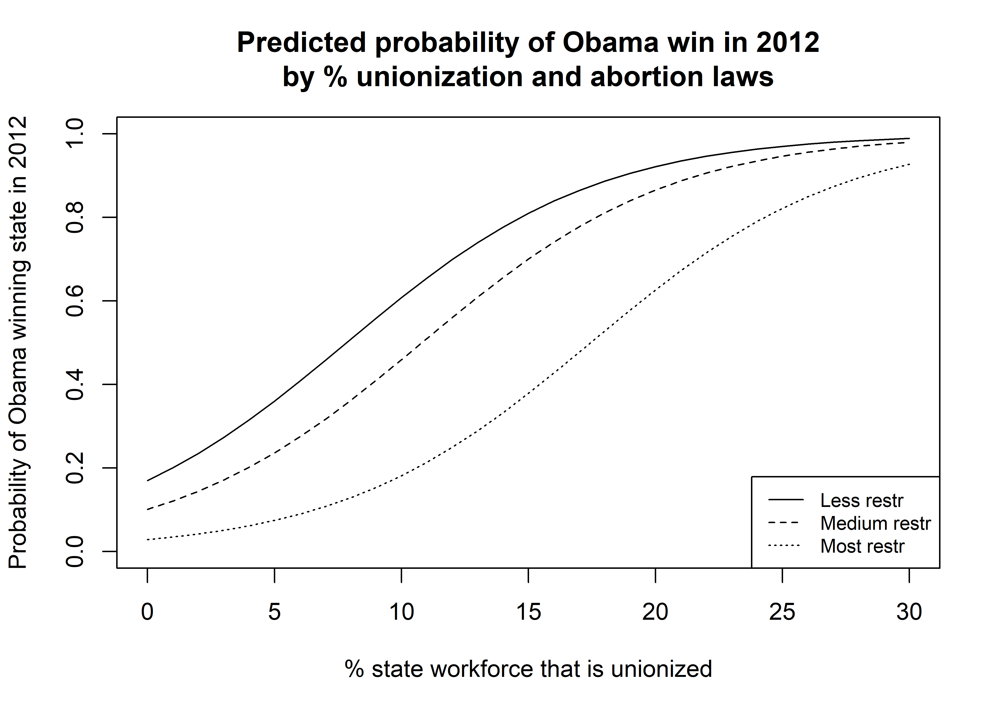
8 Extra stuff: prediction plots using ggeffects
This section is optional! Only use this if you’re already comfortable using the commands above! There is an alternative way to visualize logit results using an R package called ggeffects and the ggplot2 library. Remember that, in order to use these commands, you have to install and then load both packages.
8.1 Using predict_response
The ggeffects package has its own version of the predict function called predict_response that adds a lot of additional options for generating predictions. Most notably, it simplifies the process of generating hypothetical cases. Instead of creating a whole new data set, we can just list the terms we want to use as an optional argument for predict_response. Any covariates we leave out will be held at their “typical values” automatically. So the code below actually generates the same predictions we created in section 1.
library(ggeffects)
library(ggplot2)
library(poliscidata)
states_model = glm(obama_win12 ~ union10 + abort_rank3 + south, data=states, family=binomial)
# get predictions. Use "terms=" instead of "newdata = "
preds = predict_response(states_model, terms=c('abort_rank3', 'south'))# Predicted probabilities of obama_win12
south: Nonsouth
abort_rank3 | Predicted | 95% CI
------------------------------------
More restr | 0.33 | 0.10, 0.67
Mid | 0.65 | 0.34, 0.87
Less restr | 0.77 | 0.39, 0.95
south: South
abort_rank3 | Predicted | 95% CI
------------------------------------
More restr | 0.23 | 0.04, 0.67
Mid | 0.53 | 0.19, 0.84
Less restr | 0.67 | 0.20, 0.94
Adjusted for:
* union10 = 11.368.2 ggeffects with categorical IVs
The only thing we might want to change here are the axis labels. The ggeffects plots are based on the ggplot2 package, which is an alternative R plotting library with its own distinct grammar. The biggest difference is that we use the + sign to add stuff to ggplot objects. We can just use the labs() function to control the axis labels, add a title, and change the name of the legend in one step.
states_model = glm(obama_win12 ~ union10 + abort_rank3 + south, data=states, family=binomial)
preds = predict_response(states_model, terms=c('abort_rank3', 'south'))
plot(preds, colors= c("#e21833", "#000000")) +
labs(x = "Abortion restrictions",
y = "% chance Obama wins state", # y axis lable
color = "Region", # the adjusts the name of the legend (not the color itself)
title = "Predicted chance Obama wins state in 2012\n
by region and level of abortion restriction", # overall title
caption = "% union held at mean" # a caption in the lower right hand side
) - 1
-
Notice the
+sign here!
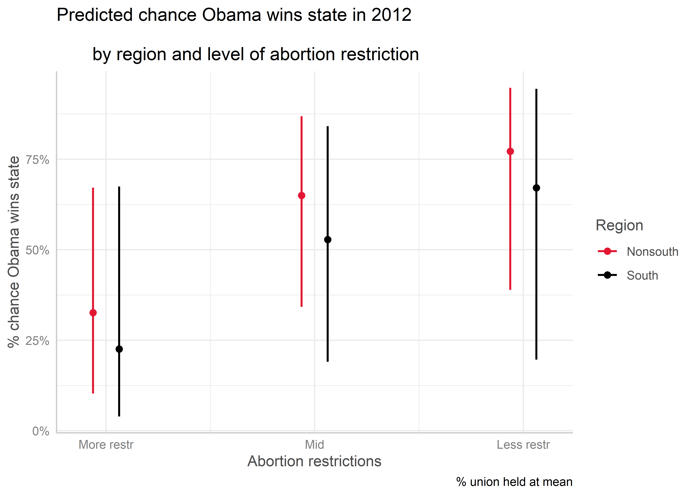
8.3 ggeffects with continuous IVs
The predict_response function will try to generate a plot that makes the most sense for the data you give it, so we want to be careful about how we order the columns when we create the state_cases object. In general: it is going to draw a ribbon plot if the first column is a continuous variable, and it will draw individual points if the first variable is a categorical variable. So we just want to make sure union10 is the first column of state_cases. As long as we’ve got that, creating the plot is pretty easy:
states_model = glm(obama_win12 ~ union10 + abort_rank3 + south, data=states, family=binomial)
union_preds = predict_response(states_model, terms =c("union10", "abort_rank3"))
plot(union_preds) +
labs( x = "% state workforce that is unionized",
y = "% chance of Obama winning state in 2012",
title = "Predicted % chance of Obama win in 2012\n
by % unionization and abortion laws",
color = 'abortion restrictions'
)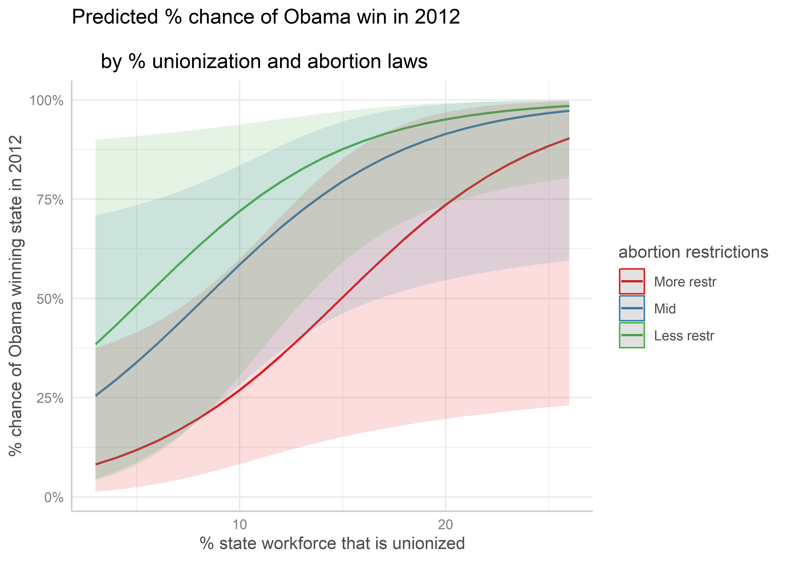
You’ll notice that, by default, the plotting function gave us a semi-transparent region around each line. This shaded space represents the 95% confidence interval for each estimate. This is a little hard to see, so we might want to change this by adding the facets=TRUE option to the plot function:
plot(union_preds, facets=TRUE) +
labs(x = "% state workforce that is unionized",
y = "% chance of Obama winning state in 2012",
title = "Predicted % chance of Obama win in 2012\nby % unionization and abortion laws",
color = 'abortion restrictions'
)- 1
- If your categorical variable has vague labels like “Yes” and “No” you might want to adjust those to something more descriptive before using the facet option. Otherwise, readers might not be able to interpret what your facets are actually depicting.
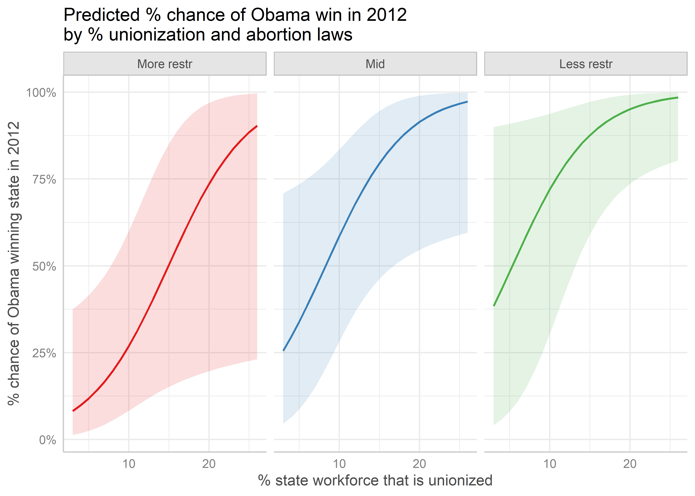
8.4 ggeffects with Multiple continuous IVs
While there’s no ggeffects equivalent of the persp function, we do still have some options for plotting multiple continuous if we just restrict ourselves to looking at a handful of values for one of the continuous covariates. In the case below, we’ve kept all the values of secularism but we’ve limited the gunlaw_rank variable to only show the 1st, 25th, and 50th ranked state. In essence, we’re simplifying this problem by turning gun law ranking into a categorical variable, so once we do that, the syntax for creating our plots and predictions will be pretty similar to what we did in the prior section.
states_obama = glm(obama_win12 ~ secularism + gunlaw_rank, data=states, family=binomial)
preds = predict_response(states_obama , terms=c("secularism", "gunlaw_rank[1, 25, 50]"))
plot(preds) +
labs(y = "% chance",
x = "secularism values",
color = "Gun restrictions ranking",
title = "Predicted probabilities of Obama win in 2012"
)- 1
- the ggeffects plotting function will try to guess what kind of plot you want based on the ordering of the terms here. In general, if you have a continuous variable, you’ll want to list that part first, followed by the categorical variable see
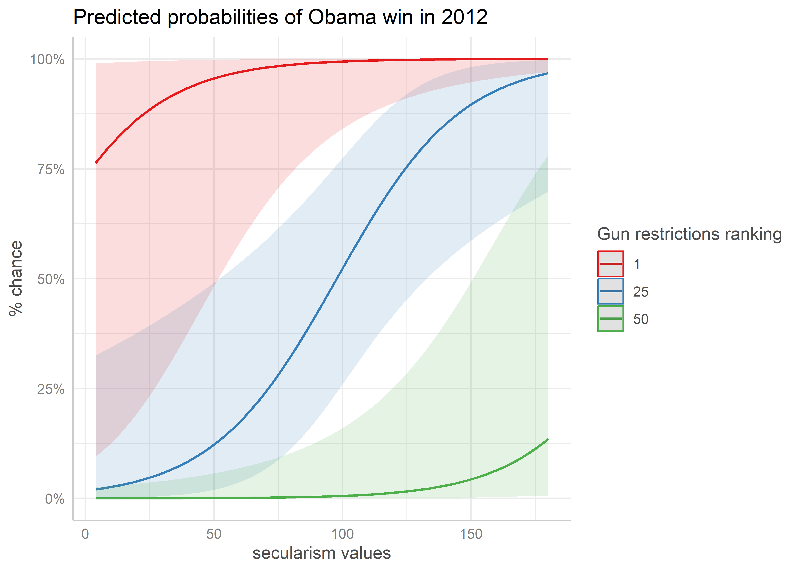
8.5 Marginal Effects
An average marginal effect can be interpreted as the effect of a one unit change in the independent variable on the predicted probability of the dependent variable. However, since the effect of X on Y in a logistic regression is non-linear, the “marginal effect” is not going to be the same for everyone: some people will already have a very high probability of experiencing the outcome of interest, so the marginal effect of a change in some variable will be very small, compared with someone whose chances for the outcome were around 50/50.
One way to account for this is by averaging the effect of a one unit change for every observation in your original data. In other words: if every state experienced a one-unit increase in unionization how much would that increase the average predicted probability of obama_win12? We can calculate this using code we’ve already used in the past. We just need to get the predictions for everyone, and then get the predictions for everyone after increasing each state’s value of union10 by 1.
# get predictions for the original data
original_preds = predict(states_model ,type='response')
# increase union10 by 1
newdata = replace(states,"union10", states$union10+1)
# get predictions with union10 at 1 value higher
preds_plus1 = predict(states_model, newdata=newdata, type='response')
# get the average change in probability of Y=1
mean(preds_plus1 - original_preds)[1] 0.02885444So the average effect of a one unit increase in union10 is about a 3 percentage point increase in the probability that Obama will win a state in 2012.
The marginaleffects package actually provides a function that will calculate this for us automatically for all of our covariates, and it will give us confidence intervals around each, and measures of statistical significance:
library(marginaleffects)
avg_comparisons(states_model)| term | contrast | estimate | std.error | statistic | p.value | s.value | conf.low | conf.high |
|---|---|---|---|---|---|---|---|---|
| abort_rank3 | Less restr - More restr | 0.344 | 0.223 | 1.545 | 0.122 | 3.032 | -0.092 | 0.781 |
| abort_rank3 | Mid - More restr | 0.238 | 0.159 | 1.496 | 0.135 | 2.893 | -0.074 | 0.550 |
| south | South - Nonsouth | -0.075 | 0.134 | -0.560 | 0.575 | 0.797 | -0.339 | 0.188 |
| union10 | +1 | 0.029 | 0.012 | 2.412 | 0.016 | 5.978 | 0.005 | 0.052 |
Our interpretation here would be: a one unit change in union10 would increase the probability of a state voting for Obama in 2012 by around ~2.9 percentage points (all else equal). The average marginal effect of being in the South compared to being outside the South is about a 0.7 percentage point decrease in the probability of voting for Obama in 2012. Moving a state from the highest level of abortion restrictions to the least restrictive would increase the probability of an Obama win by around 34 percent points.